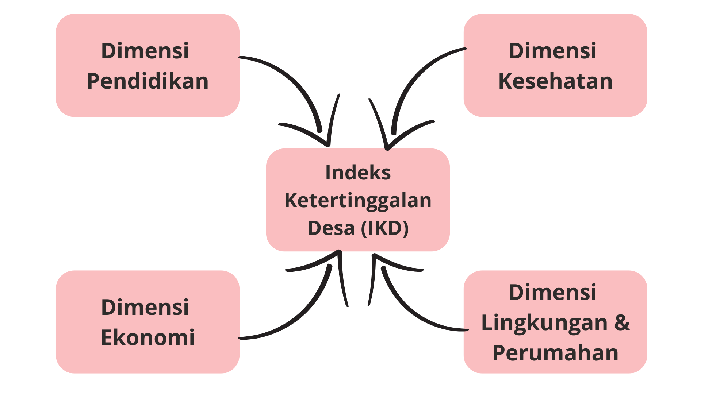

Dimensi Penyusun IKD

Suatu daerah ditetapkan sebagai daerah tertinggal dengan beberapa kriteria yang dilihat dari perekonomian masyarakatnya, sumber daya manusia, sarana dan prasarana, kemampuan keuangan daerah, aksesibilitas, dan karakteristik daerah.
Penyusunan IKD mengikuti Step For Construction A Composite Indicator oleh OECD (2008).
IKD disusun berdasarkan empat dimensi yaitu pendidikan, kesehatan, ekonomi, lingkungan dan perumahan
Sumber data yang digunakan yaitu point of interest, citra satelit, dan official statistics
Citra satelit : cloud selection, cloud masking, dan median reducing. POI : Geocode, data duplikasi, dan data luar area lokus akan dihapus
Menggunakan metode min-max
Menggunakan analisis faktor
Terdapat 4 skenario pembobotan
Membandingkan korelasi Spearman dan rata-rata perubahan rangking observasi dari skenario yang disusun
Peta tematik, grafik, dan tabel
Data yang digunakan dalam penyusunan indeks yaitu data official statistics dan big data